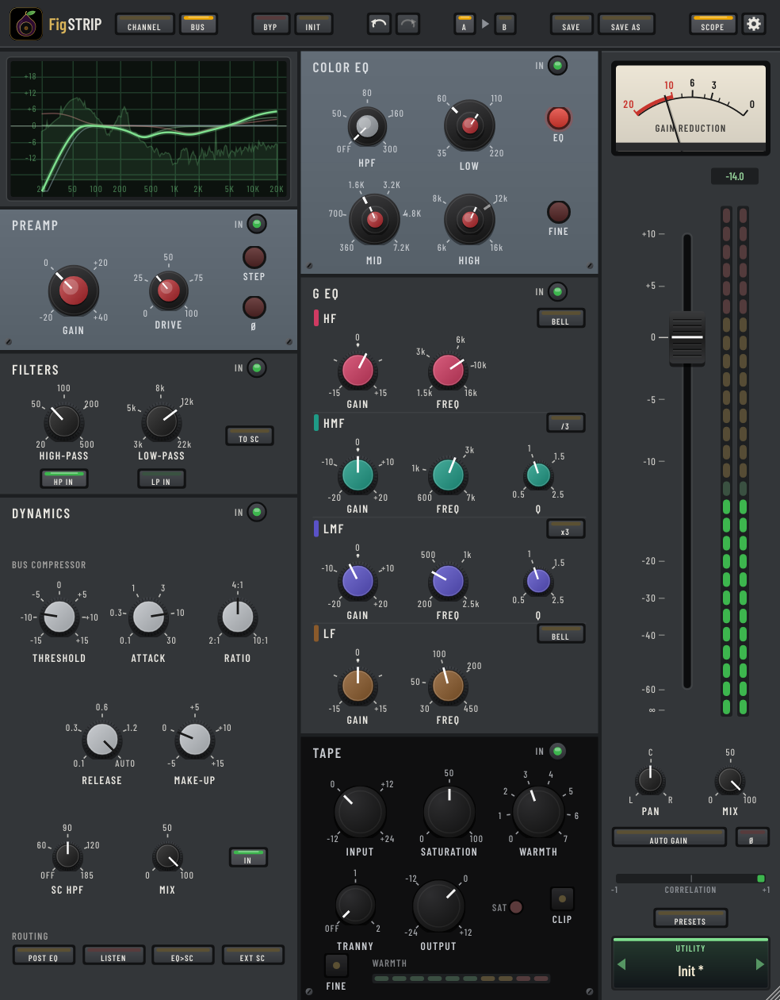
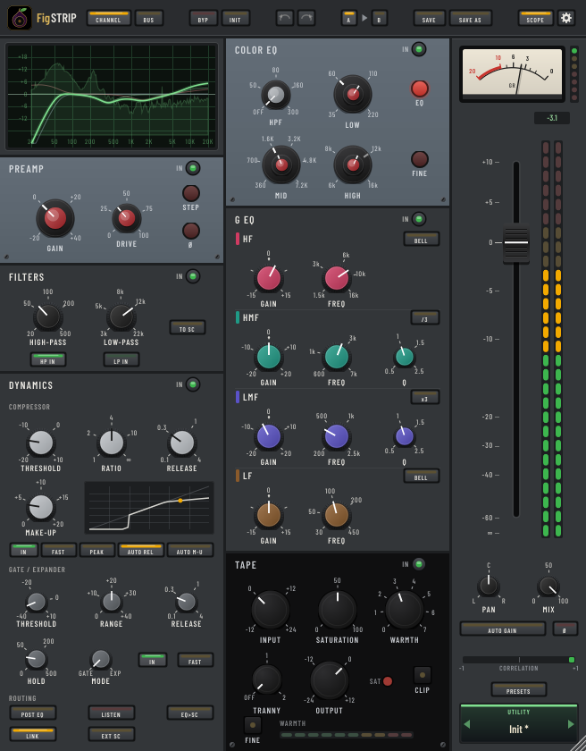

One strip,
every stage of the signal.
FigSTRIP puts a complete recording chain on every track: a preamp that warms and thickens, clean high- and low-pass filters, a compressor and gate, two EQs with different personalities, and a tape stage that rounds off transients and tames harsh highs. Drag the sections into any order, or flip one switch to turn it into a bus processor.
Mac (Apple Silicon and Intel) and Windows · AU, VST3 and standalone app


Six sections, in any order
Every section has its own IN switch. Drag them into the order you want, or flip Dynamics before or after the EQ with one switch.
Preamp
Gain in 5 dB steps or continuous, and a Drive control that adds rich, mostly even harmonics, with a transformer that saturates the low end first. Drive is level matched, so more character never just means louder.
Filters
An 18 dB per octave high-pass and a 12 dB per octave low-pass that can also feed the compressor's sidechain.
Dynamics
A compressor with soft knee, RMS or peak detection, fast attack, auto release and auto make-up, plus a gate that turns into a gentle expander. Live gain-reduction needle and a transfer curve that shows where your signal sits.
Color EQ
Low and mid bands on hand-picked frequency steps, a smooth high shelf and a stepped high-pass, all with a broad, forgiving shape: boosts widen, cuts tighten. A Fine mode frees every frequency.
G EQ
Four fully parametric bands, with shelf or bell on the outer bands and x3 and ÷3 range switches on the mids.
Tape
Input drive, saturation with odd-harmonic density, a Warmth control that smooths only the top end, an output transformer, and a clip that never lets a peak past -0.3 dBFS.
Channel or Bus, one switch
- Channel is the full strip for a single track, with the channel compressor and gate, both EQs and Tape.
- Bus swaps in a glue compressor built for mix buses, drum buses, stems and groups: threshold, stepped attack and release with a two-stage Auto release, 2, 4 and 10 to 1 ratios, make-up, a sidechain high-pass and Mix for parallel compression.
- Sets itself up for the job. Switching to Bus links the stereo channels and sets the rest of the strip up for a bus, but only on sections you haven't touched. It's one undo step, and it crossfades so you can switch while playing.
- The big meter follows the mode, from VU on a channel to gain reduction on a bus, and the scope opens.

Output
Fader, pan, polarity, Mix for parallel processing, and Auto Gain that keeps the processed sound at the level you started with, so you hear the tone, not the loudness. Peak meters, a correlation meter and a scribble strip that shows the preset name.
Made for real sessions
- 32 factory presets across vocals, drums, bass, guitar, keys and buses, plus your own presets in folders.
- Undo, redo and A/B compare, so you can try an idea and get back.
- 2x or 4x oversampling, or a Zero Latency mode for tracking.
- Mono, stereo and mono-to-stereo, with Linked, Dual Mono and Left/Right Independent stereo modes, and an external sidechain.
- Click-free automation on every control.
- A tall, resizable console-strip window that stays sharp at any size.
- Works in your DAW: LUNA, Logic Pro, Ableton Live, Reaper, Cubase, Studio One, FL Studio and more.
Get FigSTRIP
One-time purchase. Yours to keep.
Mac
macOS 11 or later, Apple Silicon or Intel. Audio Unit, VST3 and standalone app, from a signed and notarized installer.
Windows
Windows 10 or 11, 64-bit. VST3 and standalone app.
Licence
Activate on your own computers with your Fig Pro Audio account, the same one FigAMP and FigGutEQ use. One licence covers Mac and Windows. The trial is fully featured for 14 days.